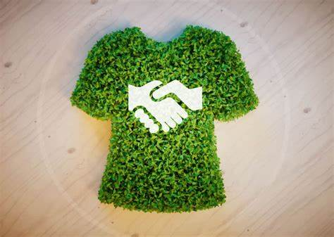
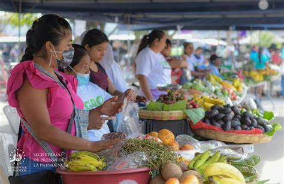
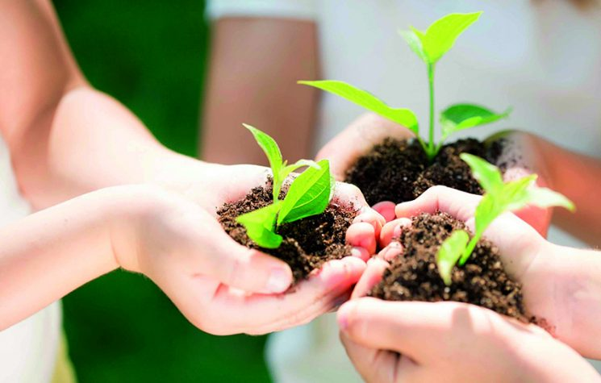
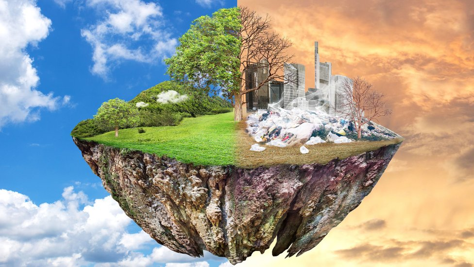
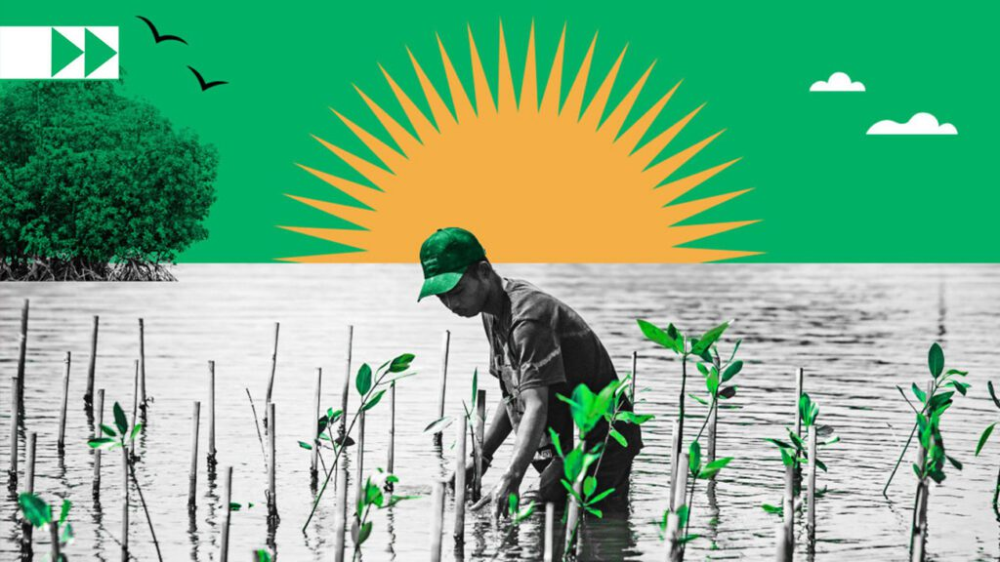
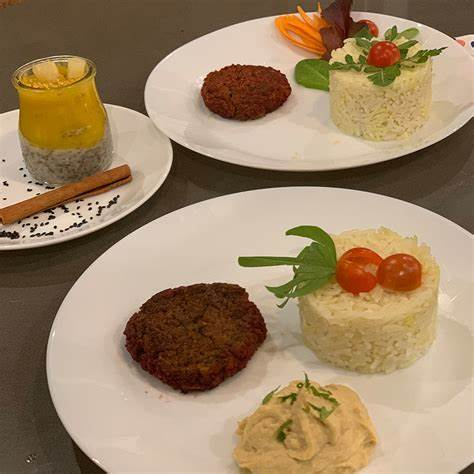
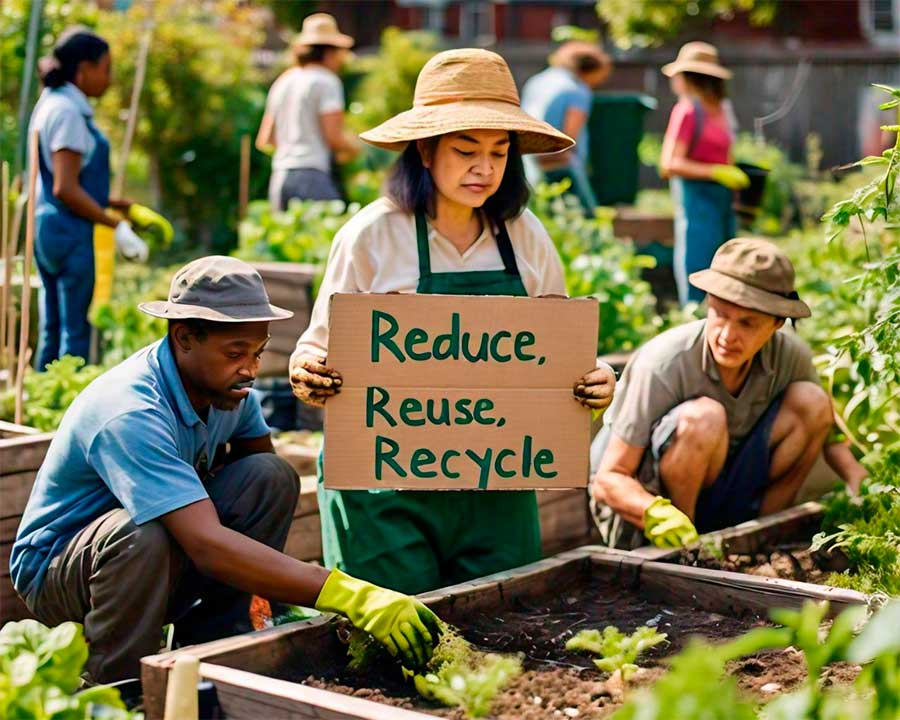

Dónde comprar ropa ecológica en El Salvador

Algunos agromercados mas visitados
Cubiertos y platos desechables

Consejos para cuidar nuestra casa común y proteger el medio ambiente

Recursos naturales en peligro de extinción: una guía para entender y actuar

Adaptación al cambio climático: desafíos y soluciones

Talleres y cursos de cocina vegetariana en El Salvador
